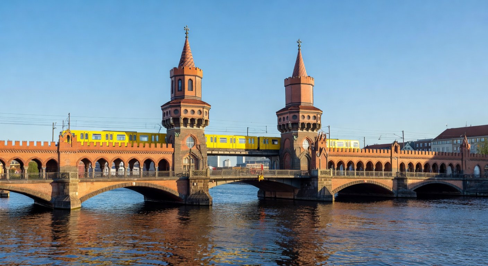
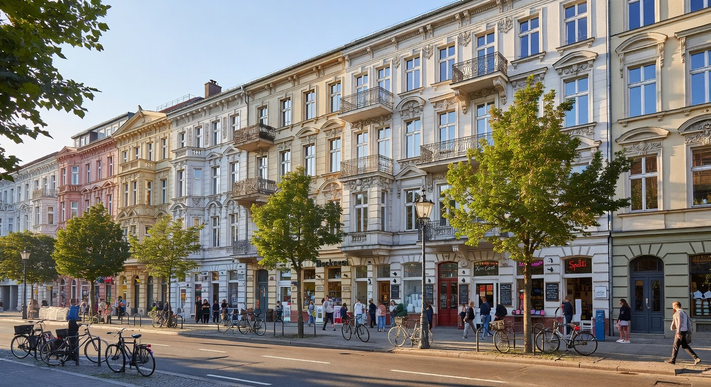
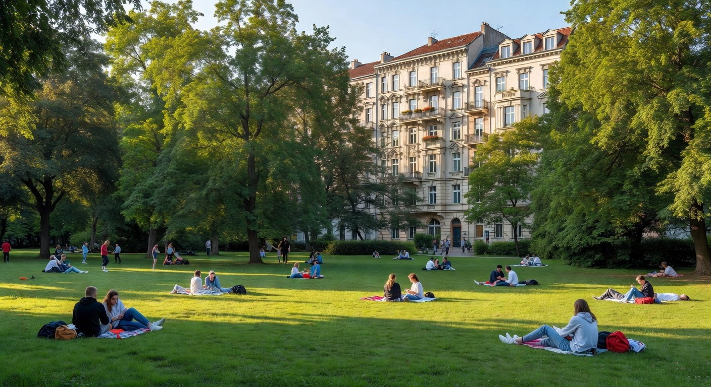

Lage in Kreuzberg
Historische Entwicklung
Vom Schlesischen Viertel zum Szeneviertel
Charakteristika
Was macht den Kiez aus?
Gründerzeithäuser
Dichte Blockbebauung aus dem späten 19. Jhd., gut erhalten dank Stadterneuerung.
Multikulti-Viertel
65% Migrationshintergrund, geprägt durch türkische Gemeinschaft und internationale Vielfalt.
Clubs & Bars
Rund um die Schlesische Straße: Szeneviertel mit Nachtleben und Künstleragenturen.
Görlitzer Park
Großer Stadtpark auf dem Gelände des ehemaligen Görlitzer Bahnhofs – Freizeitoase im Kiez.
„Im Wrangelkiez lebten bis 1990 viele Menschen, die bewusst in diesen als abgelegen empfundenen Teil West-Berlins zogen, in dem es ausgeprägte soziale Netze gab."
— Wikipedia
Aktuelle Nutzung & Mischung
Leben, Arbeiten, Kultur im Kiez
Der Wrangelkiez vereint Wohnen, Gastronomie und Subkultur auf engstem Raum. Mit 65% Migrationshintergrund ist er eines der vielfältigsten Quartiere Berlins.
Nutzungsschwerpunkte (geschätzt)
Bevölkerungsstruktur
Konflikt & Problem
Gentrifizierung & Verdrängung im Wrangelkiez
Der Wrangelkiez ist Untersuchungsgegenstand mehrerer wissenschaftlicher Studien zur Gentrifizierung. Ursprünglich ein multikulturelles Arbeiterviertel, wandelt sich der Kiez seit der Jahrtausendwende rasant: Steigende Mieten, der Zuzug wohlhabender Neuberliner und die Ansiedlung von Szene-Gastronomie verdrängen die alteingesessene Bevölkerung.
2015 gründeten Anwohner die Initiative „Bizim Kiez", nachdem dem türkischen Gemüseladen „Bizim Bakkal" in der Wrangelstraße 77 die Kündigung drohte. Der Protest war erfolgreich – doch der Verdrängungsdruck hält an: Von der Buchhandlung über den Bäcker bis hin zur Gemeinschaftspraxis verschwinden gewachsene Strukturen.
Warum ist das ein Problem?
Günstige Mietwohnungen verschwinden, soziale Einrichtungen und gewachsene Nachbarschaftsstrukturen gehen verloren. Einkommensschwache Haushalte – insbesondere Familien mit Migrationshintergrund – können sich die gestiegenen Mieten nicht mehr leisten. Die kulturelle Vielfalt des Kiezes ist bedroht.
Bilder




Sehenswürdigkeiten & Orientierungspunkte
Oberbaumbrücke
Ikonische Brücke über die Spree nach Friedrichshain
U-Bhf Schlesisches Tor
Hochbahnhof von 1902, berühmt durch Musical „Linie 1"
Görlitzer Park
Auf dem Gelände des ehemaligen Görlitzer Bahnhofs
Taborkirche
Evangelische Kirche von 1905 in der Taborstraße
„Bonjour Tristesse"
IBA-Bau von Pritzker-Preisträger Álvaro Siza Vieira
Cuvry-Brache
Ehemaliger Standort berühmter Street-Art von Blu & JR